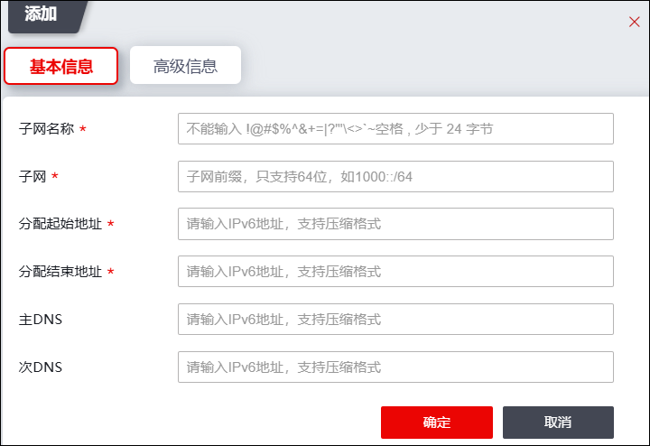
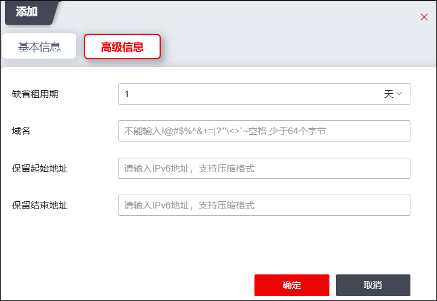
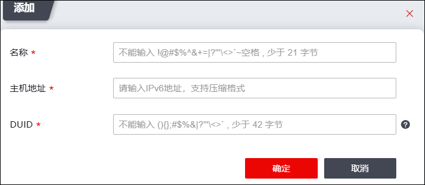

天融信防火墙设备可以指定某个物理接口、VLAN虚接口和聚合端口作为DHCPv6服务器，为该接口所在子网的主机动态分配IPv6地址。
配置防火墙设备作为DHCPv6服务器，需要首先配置地址池，才能在相应接口运行DHCP服务器。还需要在相应的接口开放DHCPv6服务，否则不能提供DHCPv6 Server的服务。
| 步骤1 | 选择 系统，激活“DHCPv6服务器”页签。 |
| 步骤2 | 添加地址池。 |
1）地址池服务配置区域，点击【添加】，如下图所示。

在添加DHCPv6地址池基本信息时，各项参数的具体说明如下表所示。
参数 |
说明 |
|---|---|
子网名称 |
必填项，设置DHCPv6地址池子网名称。 |
子网 |
必填项，设置为哪个子网创建DHCP作用域。 |
分配起始地址/分配结束地址 |
必填项，输入DHCPv6服务器可以为客户端分配IPv6地址的范围。应当与“子网”设定的IPv6在同一个网段，并且不能包含已经分配的IPv6地址。 |
主DNS/次DNS |
客户端主机在获取IPv6地址的同时会根据此处设置设定首选/备选DNS服务器地址。 |
2）激活“高级信息”页签，如下图所示。

在添加DHCPv6地址池高级信息时，各项参数的具体说明如下表所示。
参数 |
说明 |
|---|---|
缺省租用期 |
配置DHCPv6服务器向客户端租借地址的期限。到期后如果客户端要继续使用该地址则必须续订。默认值为1天。 |
域名 |
配置为网络上的客户计算机用来进行DNS名称解析时使用的父域。 |
保留起始/结束地址 |
“分配起始地址/分配结束地址”中预留出的地址。DHCPv6服务器不会将此处配置的预留IPv6地址分配给客户端。 |
3）点击【确定】按钮完成DHCPv6地址池的创建。
| 步骤3 | （可选）设置地址绑定。 |
1）选择“地址绑定”页签，然后在地址绑定区域点击【添加】，如下图所示。

在添加DHCP地址绑定规则时，各项参数的具体说明如下表所示。
参数 |
说明 |
|---|---|
名称 |
必填项，添加该地址绑定规则的名称。必须为英文字符、数字及其组合，长度范围为1-20字符。 |
主机地址 |
必填项，设置需要绑定的IPv6地址，绑定的IPv6地址必须为地址池中可分配地址。 |
DUID |
必填项，设置主机的DUID，16进制字母大小写输入均可。 |
2）设置完成后，点击【确定】按钮完成地址绑定规则的添加。
| 步骤4 | 设置运行DHCPv6服务器的接口。 |
在页面左上方“接口配置”处将提供DHCPv6服务的物理接口、VLAN虚接口名以及聚合端口添加到“已选择接口”中，点击【启用】按钮，即可在该接口启动DHCPv6服务。
| 步骤5 | 启用DHCPv6服务器租约同步。 |
点击【启用】按钮，开启租约同步开关，即支持dhcpv6双机互备功能。需在HA主备模式开启后，保证主备墙server配置一致，才能完成租约的实时同步，达到主备墙状态切换后dhcpv6服务不间断。
|
²配置NGFW作为DHCPv6服务器，需要首先配置地址池，才能在相应接口运行DHCPv6服务器。 |

| 步骤6 | 查看DHCPv6地址分配情况。 |
激活“已分配地址”页签，即可查看NGFW作为DHCPv6服务器为客户端动态分配的IPv6地址情况。